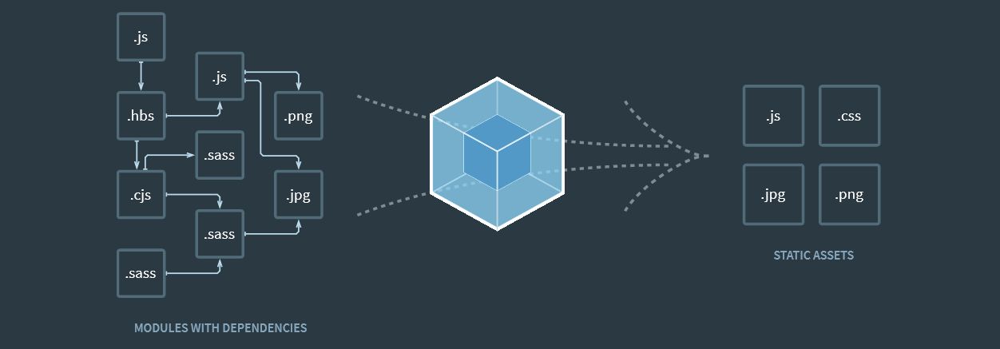

#
Week 1 | Semantic HTML
Date written: 2020-10-10
Semantic HTML is a feature of modern webpages that allows for
elements to be defined semantically. This differs from standard
HTML, where logic and style are added using classes and IDs. For
example,
<div class="article">
versus,
<article>
These differ in a few ways. For one, the
<div> element inherits nothing outside of what's
already included with the div element. Additionally, it sets up the
class .article for use with selection with CSS or
jQuery.
Alternately, the
article element inherits from the standard div, and
also from the standard article object. In this case, there's nothing
outside of display: block;, however in other cases this
is significant. Additionally, the CSS selector for this element is
article, without the . or
# that comes along with Classes and IDs respectively.
(w3schools, n.d.)
There's a bunch of these elements which carry their own inherited
style and logic, but some of the lesser used ones include:
<article>, <aside>, <details>, <figcaption>, <figure> , <footer>, <header>, <main>, <mark>, <nav>, <section>, <summary>, <time>
Article References
#
Week 2 | Object-Oriented CSS
Date written: 2020-10-17
Object-Oriented CSS is a set of implicit conventions for CSS that
names values based on what they would normally be in an
object-oriented language. Traditional CSS has no restrictions for
class and ID names, allowing anything including the names of
semantic elements. For example, a .nav class is fully
allowed, even in spite of the existing
<nav> element.
A good example of this kind of convention is Oxygen, a convention
for CSS designed around applying the OO method to naming elements in
stylesheets (Oxygen, n.d.). This convention is
fairly similar, with only 4 types of objects included in the
specification. These are:
| Object |
.button
.menu |
.noun |
| Child-Object |
.button-caret
.menu-item |
.noun-noun |
| Subclass |
.primary-button
.popup-menu
|
.adjective-noun |
| Modifier |
.is-selected
.scrollable |
.prefix-adjective or
.adjective
|
(Oxygen, n.d.)
Using this framework, it's possible to have a form of inheritance,
whereby child-objects assume the style of their parent objects. For
example:
<button class="btn btn-warning"></button>
Follows a similar process to .btn-warning being truly
inherited from btn. As both classes are in use on the
object, btn-warning can include modifications on the
core btn class to turn it into a warning button, much
like how inheritance works in other languages.
This convention can help to standardise object styles, as any
deviation from a standard object inherits from the main object much
like in a true OO language. Using this, modifying
btn will change all buttons, regardless of the child
type each button on the page uses.
Article References
#
Oxygen, (n.d.). An object-oriented methodology for stylesheets.
[online] Available at:
http://oxygencss.com/
[Accessed 2020-12-17].
#Week 3 | SASS/SCSS
Preprocessing
Date written: 2020-10-24
Sass (and SCSS) is a versatile and mature CSS extension language
that allows for the utilisation of more complex features, such as
variables and shorthands, as well as simplifying the stylesheet
development process. Sass is compiled into native CSS, and is
generally far less complex than standard CSS. For this reason, Sass
is used in modern web development because of it's raw power compared
to pure CSS and the reduction in complexity it affords.
One key element in what makes Sass useful is it's handling of
variables, which differs from CSS variables in a few key ways. This
includes how the variables can be modified and have scope, unlike
with CSS, and can additionally include more complex data like for
shadows and borders. For example:
$base-color: #c6538c;
$border-dark: rgba($base-color, 0.88);
.alert {
border: 1px solid $border-dark;
}
Will be compiled into:
.alert {
border: 1px solid rgba(198, 83, 140, 0.88);
}
This is particularly useful as it allows for variables to be used
for site-wide consistency. There's many more complex features that
Sass affords, which are fully documented
(Sass, 2020). Worth mentioning is that valid
SASS/SCSS must be compiled for use on the web, adding a small extra
step to deployment. This can be worked into a workflow like with
node or a standard shell script using the command:
sass input.scss output.css
This will build the SCSS file into CSS, ready for deployment.
There's an argument to be made that this extra step can be
detrimental, however I believe that the extended functionality can
be a huge advantage, especially so when integrated into the
development and deployment workflow.
Article References
#Week 4 | Flexbox
Date written: 2020-10-31
Flexbox is a great modern web technology that can be very powerful
for responsive design and efficient page layout, without any of the
complexity of calculating the size of objects using javascript. It
can arrange boxes based on different directions, different scaling,
filling, aligning, ordering, wrapping, with many other applications.
As a demonstration, here's a simple chart showing the different
types of barbecue sauce:

Tomato based

Vinegar based
This chart is a flex container div, with divs inside of that
container that have the
flex-grow property set to 1.
This makes it so that the boxes grow and shrink to have an even
amount of width between the three. Equally, you can add as many
boxes as you'd like, and it'd scale them proportionally. This can be
utilised in lots of ways, with the
flex-grow property allowing
elements to have a scaling ratio. In these examples, all the
elements have an equal ratio, however it's possible to have two
boxes with largely different scales.
One of the most popular applications for flexbox is in HTML forms,
as it can be very useful for having multiple inputs on one line. In
this example, there's a username and a password field on the same
line, separated by a small gap. This can all be done in flexbox very
easily:
Overall, I consider flexbox an essential skill. I've learned a small
amount about it during this course, but it's utility has always been
clear to me. I particularly like how useful it is for aligning
cards, as those are notorious for being difficult to size and
position when creating a responsive webpage. All of my knowledge of
flex comes from a single source, a wonderful guide hosted by
CSS-TRICKS (2020).
Article References
#Week 5 | JavaScript &
TypeScript
Date Written: 2020-11-05
Much like Sass, TypeScript is a superset of JavaScript, whereby all
valid JavaScript is also valid TypeScript. It transcompiles into
pure JavaScript, affording the ease of working with static typing
and additional functionality. The primary differences between
JavaScript and TypeScript come about in the implementation of strong
typing with the latter (TypeScript, 2020).
Strong typing involves defining what type a variable will use and
additionally prevents implicit type conversion, which is a large
part of why vanilla JavaScript is disliked. This strong typing looks
like this:
// JavaScript Approach
let i = 64;
// TypeScript Approach
let i: int = 64;
This is an example of TypeScript's strong typing, enforcing a
variable type at assignment. On top of this, TypeScript allows for
custom types, using type and interface:
// types are objects that have a state based on values
type DoorState = "open" | "closed";
// interfaces are comprised of member objects
interface User {
name: string;
id: number;
}
These features can be essential for writing more complex systems, as
tranditional JavaScript can be quite clunky without any typing like
this (rafpaf et al., 2020).
Additionally, TypeScript allows for static typing, which changes the
definition from using instantiation to having a static value. While
TypeScript can handle instantiation (i.e. instances of), having the
additional static capability can be greatly useful in certain
applications. An example of this would be:
class Person {
static species: string = "Human";
}
Using this example, it's clear to show that each Person object will
always have the species of "Human". It's static in that it won't
change based on instantiation
(orta et al., 2020).
Article References
#Week 6 | JS Code
Highlighting
Date Written: 2020-11-14
This section is going to cover the code blocks used on this site.
I'm using the script Prism.js, a lightweight and modular syntax
highlighter. On top of this, I'm using a modified version of the
Tomorrow Night theme. This script looks for language classes within
<code> blocks. It then styles the elements inside
the block based on a language module
(Golmote et al., n.d.). For example:
use apres::MIDI;
use std::path::Path;
fn main() {
let file_name = "Target-File.mid";
let path = Path::new(".").join(file_name);
println!("reading from {:?}!", path);
read_file(path);
}
Above is a code snippet in the language Rust, a low-level language
occupying a similar space to C or C++. The snippet has coloured text
lining up with the elements in the code. To display this, I use the
following syntax:
<pre><code class="lang-rust">
fn main() {
println!("Hello World");
}
</code></pre>
The class lang-rust specifies what language is in the
code block, which controls the syntax highlighting and the language
readout in the top right. Prism also has extensions, including one
for the command line:
sudo apt update
This extension adds some extra flavour to the code block, while
still correctly highlighting the command as shell (or, more
specifically, bash). This is written as:
<pre
class="command-line lang-bash"
data-user="erin"
data-host="localhost"
>
<code class="lang-bash">
sudo apt update
</code>
</pre>
This functionality can be very useful for a blog like this, as it
lets me put code snippets right into the webpage without needing to
embed an iframe to a GitHub Gist or manually format the script.
Additionally, I can revise elements in the code tags, updating
what's there or adding or removing elements very easily. Finally,
the style that this afford is very useful, as I can easily change
the overall theme that the highlighting uses.
This shows how useful FOSS web-scripting can be, as there's always
going to be a module somewhere out there that does what you want,
and adapting them and utilising them can be half the battle in web
development. This will be expanded upon greatly in the next few
segments.
Article References
#Week 7 | jQuery
Date Written: 2020-11-21
Although modern web development has largely abandoned jQuery in
favour of pure JS and other frameworks like React or Vue, jQuery
still has a presence, being used in web development and bundled
alongside popular libraries like Bootstrap v4.5.x (No longer true
for ^5.0.0) (XhmikosR et al., 2020).
jQuery is a useful library for "DOM Traversal and Manipulation",
Event Handling, and Ajax
(dmethvin et al., 2020), each of which
I'll describe below:
DOM Traversal and Manipulation
jQuery's most commonly used feature involves the easy selection of
DOM elements much like with CSS. Each DOM element on a page has an
element type, and can have a class, multiple classes, or an ID.
<header class="header layout-top" id="main-header"></header>
This element above has a few features that can make it very easy to
manipulate in CSS. These include the header element,
the .header and .layout-top classes, and
the #main-header id. A CSS file that manipulates these
values will look like this:
/* Semantic Element */
header {
...
}
/* Classes */
.header {
...
}
.layout-top {
...
}
/* ID */
#main-header {
...
}
The selector that doesn't have any punctuation refers to the
semantic element of header, while the dot refers to
classes, and the hashtag/pound sign refers to an ID. The usefulness
of jQuery is that this functionality is preserved, allowing for the
following:
// Change the value based on a semantic element
$("header").html("Welcome to the site");
// Perform a function for each Class
$(".header").each(function () { ... });
// Hide the element based on ID
$("#main-header").hide();
(jQuery, n.d.)
This simple syntax makes jQuery very appealing for developers, as
having knowledge in CSS Selectors makes it very easy to implement
jQuery in a practical way.
Event Handling
jQuery can also be used to handle events, extending the basic
JavaScript event functionality. While PureJS events rely on HTML to
implement the event functionality, jQuery can add events to elements
based on selectors in the script. For example, two alternate methods
to implementing a click event for a button:
<button onclick="click()" />
$(button).on("click", function (event) { ... });
While these are both functionally similar, jQuery implements this
without requiring any in-HTML event handling. This can be very
useful for maintaining clean code. Additionally, the quantity of
events that jQuery can handle is much greater than that of pure
HTML/JS, as signified by their documentation on the issue
(jQuery, n.d.).
Ajax
Arguably the most useful side of jQuery is Ajax, a wrapper for HTTP
Requests. HTTP requests allow for sites to interact with other
servers easily, using various request methods to communicate
(w3schools, n.d.). Usually HTTP requests are
confined to forms, and allow for clients and servers to interact.
Ajax exposes this functionality in a practical manner, allowing for
developers to perform asynchronous HTTP requests without the usage
of forms (jQuery, n.d.).
I've implemented HTTP requests in my own projects commonly recently,
including an automation script for the university network and for
fetching repos from GitHub's REST API.
This function fetches all of the public repositories from my GitHub,
then converts them to JSON data ready for other scripts to display
the data on the page.
componentDidMount() {
fetch("https://api.github.com/users/summerysaturn/repos")
.then((res) => res.json())
.then((data) => {
this.setState({
restData: data,
});
});
}
Modified source code from my project, summerysaturn.github.io
This Bash script assigns a GET request to the variable $get, ready
for handling later on with a grep. This mimics a GET
request for loading a page, which assigns a SESSID cookie for the
POST request in the script later on.
get=$(
curl -s -o /dev/null -D
- 'https://firewall-auth.brighton.ac.uk:6082/php/uid.php?vsys=1&rule=2'
-A 'WorldWideweb (NEXT)'
-H 'accept: text/html,application/xhtml+xml,application/xml;q=0.9,image/webp,*/*;q=0.8'
-H 'accept-encoding: gzip, deflate, br'
-H 'accept-language: en-GB,en;q=0.5'
-H 'connection: keep-alive'
-H 'upgrade-insecure-requests: 1'
)
Modified source code from my project, lyla-dotfiles
Ajax allows for this functionality in JavaScript, without the
requirement of a large library like React (as above). This allows
for the same functionality to exist in a webpage. For example, the
jQuery documentation has a few example requests, including this one
(jQuery, n.d.):
$.ajax({
url: "script.php",
method: "POST",
data: { id : menuId },
dataType: "html"
});
jQuery isn't strictly necessary for HTTP requests, as it's only a
wrapper (You Don't Need jQuery!, 2014), but the
same is true for many of the things jQuery implements.
Article References
#
dmethvin et al., (2020). jQuery. [online] Available at:
https://jquery.com/ [Accessed
2020-12-17].
# Week 8 | Node.js
Date Written: 2020-11-28
Node.js is an non-blocking JavaScript runtime that can be used to
build applications hosted on the web
(XhmikosR et al., 2020). What this means
is that it's an environment that can execute JavaScript much like a
web browser, without any of the web frontend that comes with a
regular browser (Gibb, Robery, 2020). The
non-blocking part refers to how many connections can be handled
concurrently without holding up a thread
(Capan, n.d.).
The primary utility of Node.js is on the server as a backend, as it
is primarily useful in how it handles connections concurrently. This
being said, I've found particular use for Node.js using package
managers like NPM and Yarn, as it can help to build applications
using frameworks like React.js and Electron.
node
Welcome to Node.js v14.15.0.
Type ".help" for more information.
>
In the command line, Node.js can be utilised to execute JavaScript
easily as a scripting language, which is what NPM and Yarn both run
on (Node.js, 2011). These package managers fetch
packages from the NPM Registry
(w3schools, n.d.) and install them either
globally or in the local directory. This can be used to set up
dependencies in a JavaScript project, allowing for easier sharing
and version management when compared with traditional solutions.
Each local directory that utilises Node.js has a
package.json file which includes details about the
package, along with the dependencies, license, repository, author,
etc. This information is very useful to include in the root of a
repository.
{
"name": "countdown-applet",
"version": "1.0.0",
"description": "A minimal Electron countdown app",
"main": "main.js",
"scripts": {
"start": "electron ."
},
"author": "GitHub",
"license": "MIT",
"devDependencies": {
"electron": "^8.5.2",
"electron-reload": "^1.5.0"
},
"dependencies": {}
}
Modified source code from my project, countdown-applet.
My primary utilisation of Node.js comes from the utilisation of a
few frameworks, including Electron, TypeScript, Sass, Webpack,
Bootstrap, and a few others.
Electron-Forge is a
preset project that has all the dependencies needed to produce
Electron apps using Node. Electron itself is described in
Week 11's Article.
Article References
# Week 9 | React
Date Written: 2020-12-05
ReactJS is a JavaScript library designed around component-based UI
(Facebook, 2021). It's unique in that it has a
specific method of rendering elements, differing greatly from
traditional web design. This is difficult to learn, however it
affords ReactJS a lot of versatility and performance.
A major part of this element style relate to Component Props and
Component State. The diagram below illustrates this:
(Holla, n.d.)
Props are passed down from parent elements, whereas State is
self-referential for each component. This data flow outlines how
components affect each other, and how parent elements have priority
over child elements. Additionally, state can be used to affect how a
component renders, by re-rendering whenever state changes
(Holla, n.d.).
(Holla, n.d.)
Additionally, each component has a large amount of callbacks
relating to it's own lifecycle, allowing for lots of granularity
over what a component should do at each point in the lifecycle. This
can have many practical implications
(Holla, n.d.).
class ClassComponentExample extends React.Component {
constructor(props){
super(props);
console.log('Constructor State')
this.state = {
messageB1:"Default Message B - 1",
messageB2:"Default Message B - 2",
}
}
render() {
console.log('Render State')
return <div><h1>{this.props.message}</h1>
<h1>{this.state.messageB1}</h1>
<h1>{this.state.messageB2}</h1>
<button onclick="{this.b1OnClick}">B1 Button</button>
<button onclick="{this.b2OnClick}">B2 Button</button>
</div>
}
}
Modified source code from Holla (n.d.)
ReactJS is far too complex to sum up in this blog, but this should
be a decent starting point. ReactJS is something I've used in a
couple of projects already, and it's a useful skill for the
industry, as it runs a fair amount of the modern web. Facebook
itself is written on React, explaining why Facebook is cited for
this article.
Article References
# Week 10 | WebPack
Date Written: 2020-12-12
With the internet getting larger and larger, technologies aiming to
cut down on extraneous data usage are essential. The speed at which
a page loads is largely dictated by the optimisation put into the
webpage design. Webpack aims to solve an issue where many files are
sent when a page is loaded due to dependencies, instead packaging
all the dependencies for a page into a smaller payload.
Webpack functions by identifying the usage of modules and
dependencies in your JavaScript, CSS, Sass, etc., and packages them
all into a minified file that they call a Static Asset. These assets
are delineated by type, including JavaScript, CSS, and images.

(Webpack, n.d.)
I'm using this in my modern Node/Electron projects, as Electron
Forge includes Webpack as an option natively
(Electron Forge, n.d.). The ease of webpack
comes from how you can drop it into an existing Node project, set it
up, then forget about it; it's effectively free optimisation,
provided that no issues come up.
Article References
# Week 11 | Electron
Date Written: 2020-12-19
Electron is a framework originally designed for the text editor
Atom, having evolved since it's 1.0 release in 2014
(Marcin and Olga, 2020). The framework is now
utilised by many different applications, including Slack and Visual
Studio Code (Electron, n.d.). The utility of
Electron comes from how it allows for you to create a desktop
application using HTML, CSS and Javascript, being a Node package
(Marcin and Olga, 2020).
Electron solves an issue in the programming industry whereby good
cross-platform UI Frameworks are hard to get ahold of. This issue is
solved in Electron by effectively shipping a web application as a
desktop app, one of the few things that are easy to use and react
consistently regardless of host operating system; Windows relies
upon it's own UI library
(Bridge, Schofield, 2020), MacOS has a couple
(Apple, n.d.) (Apple, n.d.),
and Linux has multiple frameworks (Gnome, 2021)
(The QT Company, 2020). Electron sidesteps this
issue entirely, having everything rendered entirely as a webpage.
Electron has drawn criticism around utilising the web stack for
general purpose GUI, replacing those native UI toolkits that work
with low level languages. The fact that every instance of an
electron app is a whole browser instance affects performance in a
big way, with Electron apps being notorious for using lots of memory
and being far less performant than a binary application
(Rory, 2017) (Ohno, 2018).
I personally understand the concerns about Electron and utilise it
in spite of that, as it's a very accessible framework for someone
used to front-end web design. In the future I might learn something
like GTK, however for now, Electron is useful for app development.
Article References
#
The QT Company, (2020). UIKit. [online] Available at:
https://www.qt.io/
[Accessed 2021-01-06]